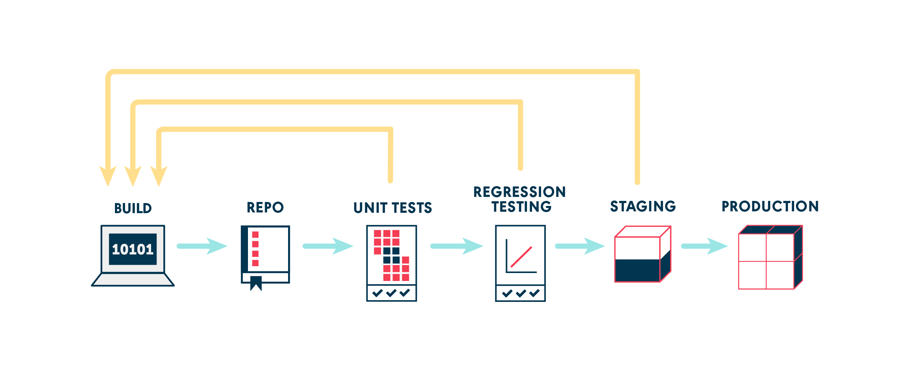

In an ideal, magical world, your end-to-end deployment from a commit to production looks like this:

If this represents your situation (especially if all your tests run quickly enough that you’re confident about deploying to production), you don’t really need a good Continuous Delivery (referred to as CD) solution and you can stop reading this post right here.
However, for most of us, the path from commit to production involves numerous moving parts, (like multiple code and asset repositories, automatic and manual handoffs, unit tests, integration tests, acceptance tests, performance tests, security tests, etc.) and time that it takes to execute all of these elements. When your path to production is not the magical world shown above, you need a way of modeling your workflow so that people can see, understand and talk about it. This is where CD pipelines come in.
In this on-going series, we’ll cover aspects of CD pipelines from why they are important to some of the optimal ways to model them.
What is a Continuous Delivery Pipeline?
A deployment pipeline is an integral part of Continuous Delivery. It is a way of modeling your software delivery process so that it provides feedback and visibility to the team delivering new features.
Jez Humble, co-author of the book Continuous Delivery, in his blog says,
Deployment pipelines tie together configuration management, continuous integration and test and deployment automation in a holistic, powerful way that works to improve software quality, increase stability, and reduce the time and cost required to make incremental changes to software, whatever domain you’re operating in.
CD pipelines are incredibly useful in telling you as quickly as possible whether a change is good enough to be taken to production.
Why do you need a CD pipeline?
Boiled down to its essence a CD pipeline is a series of feedback loops.
Quick feedback loops are everywhere, including industries apart from software development. Any situation where you can make a change, see its effect, correct the input to make it go towards a desired outcome (and rinse and repeat) is a great opportunity for feedback loops.
In technology, some of the obvious attempts at feedback loops are REPLs (Read-Eval-Print-Loops for languages) and tests. And in the world of build and deployment, a deployment pipeline satisfies the need for quick feedback.
The necessity for a deployment pipeline has been perfectly summed up by Martin Fowler as this
One of the challenges of an automated build and test environment is you want your build to be fast, so that you can get fast feedback, but comprehensive tests take a long time to run. A deployment pipeline is a way to deal with this by breaking up your build into stages. Each stage provides increasing confidence, usually at the cost of extra time. Early stages can find most problems yielding faster feedback, while later stages provide slower and more through probing. Deployment pipelines are a central part of Continuous Delivery.
Some fundamental principles of CD pipelines
1. Fast feedback first
Usually, CD pipelines are set up so that the parts which provide fast feedback run first. In practice, quick-running unit tests are usually run earlier in the pipeline than the slower-running functional and performance tests. This ensures quicker feedback by making sure that slower running tests aren’t run unnecessarily taking up resources.

2. Most important feedback first
Just because something runs quickly doesn’t mean that it needs to be brought ahead in the CD pipeline. It is possible that running something which is slower but much more valuable, will provide better feedback than running something which is quick but doesn’t fail enough to be useful.
For instance, installer tests might be valuable and might run quicker than functional tests. However, in a typical project, changes to the installer are much less frequent than changes which might fail functional tests. So, it is reasonable to delay the installer tests till the functional tests have finished.
3. Parallelize as much as possible
Ideally, for every change, you want to be able to run every type of test parallely, so that the overall feedback time is reduced. In the extreme case of being able to run everything parallely, the cycle time becomes as much as the longest running part of the pipeline.
In practice, due to resource constraints, this is not always possible. So, a CD pipeline solution should allow selective parallelization.
4. Build once and reuse
This is one of the bedrock CD principles - the ability to build once, get an artifact and run it through different kinds of tests, so that your confidence in that specific artifact increases over time. Once it goes through the final gate in the CD pipeline successfully, you can be assured that the artifact is safe to be deployed to production and used.

It is up to the CD pipeline solution you choose to provide a good artifact propagation mechanism, so that, even with multiple instances of the pipeline running, it keeps track of the correct version of the artifact to be used in the rest of the pipeline.
5. Able to run this process locally
It is recommended to have scripts for your whole build and deployment process, so that changes can be easily tracked and audited. Moreover, this allows you to be independent of the CD tool of your choice. This allows you to treat the CD tool as a script runner which is aware of the workflow of deploying to production but isn’t necessarily the only place where the knowledge of how to build and deploy is. This stops it from being a big single-point-of-failure for the organization.
6. Make the process repeatable
Through a combination of environment variables and isolation mechanisms such as virtual machines or containers, it is recommended to make the build process repeatable so that it is not dependent on being run at a specific time or on a specific set of worker or agent nodes. Using solutions such as Ansible/Chef/Puppet/SaltStack, etc. for provisioning the virtual machines or agent infrastructure can also help towards this.
7. Should be able to run or rerun some parts of the pipeline, potentially with different parameters
It is not uncommon to need to rerun parts of a CD pipeline. Typically, this happens when tests fail for environment-related reasons and you’re trying to confirm that suspicion. It’s also used to get specific versions of a build into an environment, for testing. Even though, ideally, it’s all automatic and you should never have to do this, it’s useful to be able to.
Boiled down to it, a CD pipeline is going to try to, as quickly as possible, do everything possible to stop your change from going to production. It is great when something fails in a CD pipeline because it means that it did not go into production and fail there.
In our next post, we’ll look at some common approaches to build and deployment workflows and how CD pipelines can be modeled to accommodate them. We’ll be describing these using GoCD as the CD tool. To follow along, do get to know some of the basic concepts of GoCD and how to get started with GoCD.
Note: In this series of posts, the examples and images shown will be using GoCD but the concepts are generic and can be implemented on your preferred CD solution.